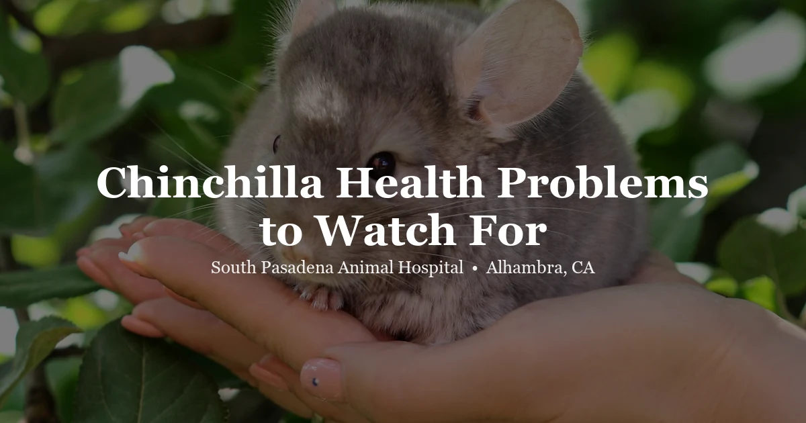

April 14, 2026 · 7 min read
Chinchilla Not Eating? Here’s What It Means and What to Do

Chinchillas are stoic animals. They hide pain and illness instinctively — a survival behavior inherited from prey species in the wild. This means that by the time a chinchilla visibly stops eating, something has usually been wrong for a while. A chinchilla that has not eaten for 12–24 hours is not in a "wait and see" situation. It needs to be seen by a vet today.
At our Alhambra chinchilla vet clinic, we see chinchillas with dental disease, GI slowdowns, and respiratory infections regularly — and the common thread in nearly all of them is that the owner first noticed something was wrong because the chinchilla stopped eating. This guide covers the main reasons it happens and what you should do.
Why a Chinchilla Stops Eating: The Most Common Causes
1. Dental Disease (The Most Common Cause)
Dental problems are the single most frequent reason chinchillas stop eating, and they are also among the most misunderstood. Chinchilla teeth grow continuously throughout their lives — both the front incisors and the back molars (cheek teeth). When teeth grow abnormally or misalign, they develop sharp points and hooks (called spurs) that cut into the tongue, cheeks, and soft tissue of the mouth. Eating becomes genuinely painful.
The key challenge: you can't see chinchilla cheek teeth from the outside. The incisors (front teeth) are visible when you gently pull back the lips, but the cheek teeth are deep in the back of the mouth and completely hidden to the naked eye without sedation. Many chinchilla owners don't know their chin has serious dental disease until a vet exam reveals it.
Warning signs of chinchilla dental disease:
- Dropping food while chewing (the chinchilla picks up food but then drops it)
- Drooling or wet fur around the chin and chest ("slobbers")
- Weight loss despite appearing to try to eat
- Pawing at the mouth
- Preference for softer foods while avoiding hay
- Gradual decline in droppings over days or weeks
Diagnosis requires skull X-rays under sedation to evaluate tooth roots and alignment. Treatment typically involves filing or extracting affected teeth under anesthesia. While this sounds significant, many chinchillas do well with dental treatment and go on to eat normally again.
2. GI Stasis
Gastrointestinal stasis — when the gut slows down or stops moving — is a medical emergency in chinchillas. The chinchilla GI tract requires near-constant food intake and movement to function. When it stalls, bacterial balance in the gut shifts rapidly, gas accumulates, and the chinchilla deteriorates quickly.
GI stasis can be caused by dental pain (which stops the chinchilla from eating, triggering the stasis), stress, dehydration, a sudden diet change, or a blockage. It can also develop secondary to another illness when the chinchilla stops eating for any reason.
Signs of GI stasis in chinchillas:
- No droppings or dramatically reduced droppings (healthy chinchillas produce dozens per day)
- Bloated or tense abdomen
- Complete refusal to eat or drink
- Hunched posture or reluctance to move
- Teeth grinding (a sign of pain)
GI stasis requires same-day veterinary care. Treatment includes gut motility medications, fluid support, pain management, and assisted feeding. The sooner treatment starts, the better the outcome.
3. Respiratory Infection
Upper and lower respiratory infections can cause chinchillas to stop eating due to a combination of feeling unwell, difficulty smelling food (which dampens appetite), and the energy cost of fighting infection. Signs include nasal discharge, labored breathing, lethargy, and clicking or rattling sounds when breathing.
Respiratory infections in chinchillas require prompt treatment. They can progress quickly in small animals, and a chinchilla that's already compromised by not eating is at higher risk of rapid deterioration.
4. Stress and Environmental Factors
Chinchillas are sensitive to environmental stress: temperature extremes (they overheat above 70°F in humid conditions), sudden loud noises, a new animal in the home, moving to a new cage or room, the recent loss of a bonded companion, or a change in their routine. Stress can cause acute appetite loss that resolves when the stressor is removed.
However, stress-related anorexia that lasts more than 24 hours still carries the risk of secondary GI stasis. Don't assume it's "just stress" for longer than a day.
5. Pain from Other Sources
Any source of pain — musculoskeletal injury, bladder stones, a uterine infection in females — can suppress appetite. If your chinchilla is not eating and also appears to be hunched, reluctant to be handled, or moving abnormally, pain from a non-dental source may be the cause.
How Is a "Not Eating" Chinchilla Evaluated?
At South Pasadena Animal Hospital, a chinchilla that's not eating gets a thorough assessment:
- Physical exam: Weight check (weight loss is often the first measurable sign of illness), assessment of hydration, palpation of the abdomen for gas or masses, examination of the incisors
- Oral exam under sedation: Because cheek teeth can't be evaluated awake, sedation is often necessary to properly see what's happening in the back of the mouth
- Dental radiographs: X-rays of the skull to evaluate tooth roots, alignment, and bone density — the gold standard for diagnosing chinchilla dental disease
- Radiographs of the abdomen: To check for gas accumulation, GI dilation, or foreign material
- Bloodwork if indicated: To assess kidney and liver function, especially in chinchillas that have been ill for a while
Can I Try to Syringe Feed at Home First?
This is one of the most common questions we hear. The short answer: not before you know the cause.
Syringe feeding can be an important part of supportive care for a chinchilla that's recovering from dental treatment or GI issues — but it should only happen after a diagnosis. If your chinchilla has a GI blockage, forcing food through the system can worsen the obstruction. If severe bloating is present, adding more material to the gut can increase pressure and pain.
Get the exam first. Your vet will tell you whether syringe feeding is appropriate and how to do it safely.
Monitoring Droppings: Your Early Warning System
One of the best things you can do as a chinchilla owner is get in the habit of checking your chinchilla's droppings daily. Healthy chinchillas produce a large number of firm, oval, dark brown pellets every day — their droppings are one of the clearest indicators of gut health.
If you notice droppings becoming smaller, fewer in number, softer, or absent, that's your cue to act — even before your chinchilla shows obvious signs of not eating. The gut slowdown often precedes the visible appetite loss.
Frequently Asked Questions
Why is my chinchilla not eating?
The most common causes are dental disease (malocclusion or tooth spurs), GI stasis, respiratory infection, and stress. Because chinchillas hide illness well, a chinchilla that has stopped eating should be seen by a vet the same day — they have likely been unwell for longer than the behavior suggests.
How long can a chinchilla go without eating?
Chinchillas should not go more than 12–24 hours without eating. Their GI tract requires near-constant movement. Prolonged anorexia leads rapidly to GI stasis, fatty liver, and severe dehydration — all life-threatening without prompt treatment.
What is chinchilla GI stasis?
GI stasis is when a chinchilla's digestive system slows dramatically or stops. Signs include loss of appetite, reduced or absent droppings, a bloated abdomen, and lethargy. It's a medical emergency that needs same-day veterinary care.
How is dental disease diagnosed in chinchillas?
Chinchilla dental disease often cannot be diagnosed by visual exam alone — the back teeth are deep in the mouth and not visible without sedation. Dental radiographs under sedation are typically needed for a proper diagnosis.
Can I syringe-feed my chinchilla at home?
Only after a vet examination has identified the cause of the anorexia. If the cause is a blockage or bloating-related GI issue, forcing food can worsen things. Always get a diagnosis first.
What should chinchilla droppings look like?
Healthy droppings are firm, dark brown, oval-shaped, and produced in large quantities — often 200 or more per day. Absent or greatly reduced droppings mean the GI tract has slowed and require same-day vet care.
Bring Your Chinchilla to Our Alhambra Clinic
If your chinchilla has not eaten today, don't wait to see if things improve tomorrow. Our team at South Pasadena Animal Hospital sees chinchillas and other small mammals regularly. We have the equipment and training to evaluate dental disease properly, manage GI emergencies, and get your chinchilla comfortable again. Call us at (626) 441-1314 or book online — same-day appointments are available for urgent cases.